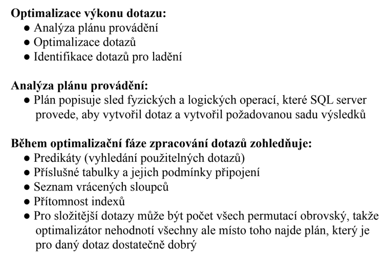
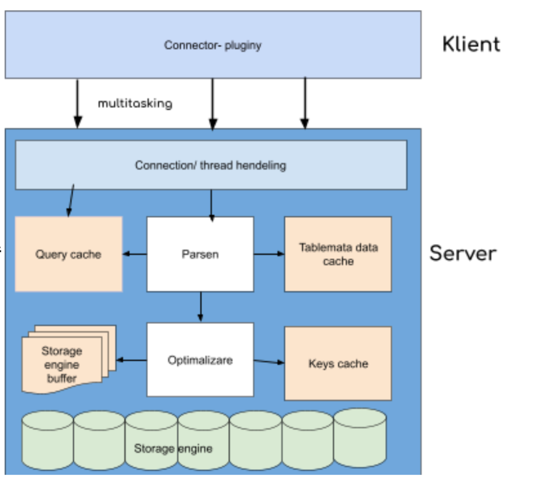
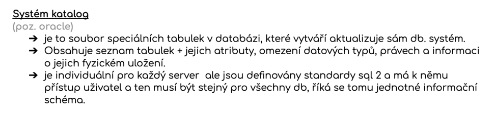

Architektura-databazovych-systemu-sprava
Otázky
Co je to klient-server
Co je to systémový katalog
co v něm najdeme
jak ho můžeme upravit
Co je to buffer
Co je to stránka
druhy
Architektura
relační databázový systém má architekturu klient-server
Klient
jakákoli aplikace s connectorem, komunikuje se server
Server
místo kde jsou data uložená, zajišťuje správu dat. Řídí přístup k datům, provádí transakce
Stránka
stránka je jednotka fyzického úložiště s pevně danou velikostí (většinou 8 KB)
jsou do ní uloženy data
slouží k efektivnímu organizování a správě dat v DB
DS načítá a ukládá data do stránek --> efektivita DBMS
Služby
Parser
kontorluje syntaxi sql požadavků
kontrola authentifikace
Optimiser
ladí výkon jednotlivých dotazů
nevyladěné dotazy můžou ovlivnit výkon DB
vytváří tzv. účinný efektivní plán provedení příkazů SQL pro každý storage engine
řadí dotazy podle efektivity
 
Metadata cache
je v RAMce a ukládají se tam nejčastěji používaná metadata
Query cache
paměť pro identické příkazy, je sdílená napříč sessions
Key cache
Správa vyrovnávací paměti
diskové operace I/O jsou základní charakteristikou DB stroje
řízení vyrovnávací paměti je klíčem k efektivite I/O oeprací
dělí se na
Správce vyrovnávací paměti - pro přístup a aktualizaci DB stránek. Spravuje funkce pro čtení dat nebo indexovaných stránek. Zápis upravených stránek
Mezipaměť - vyrovnávací paměti
Buffer je stránka v paměti 8 KB
Stránka zůstává ve vyrovnávací paměti dokud správce nepotřebuje uvolnit místo
Data v mezipamětí a vyrovnávací paměti mohou být několikrát upravena před zápisem na disk
Systémový katalog
Obsahuje informace o schématu relační DB
seznam tabulek, pohledů, indexů, uživatelů...
jde o metadata
k datům lze přistupovat pomocí SQL příkazů
Nelze měnit jeho obsah pomocí: INSERT, UPDATE, DELETE
Pouze příkazy: CREATE TABLE, CREATE VIEW, DROP TABLE...
jsou zde například data o tom kdo má jaké přístupy k jaké entitě, seznamy tabulek a informace o nich

Sum-up
Server--> místo kde jsou uložená data
Klient--> aplikace s connectorem, komunikuje se serverem
Klient-server
Stránka - jednotka fyzického úložiště s fixní velikostí. Slouží pro efektivitu DB a organizaci dat
Parser - Kontroluje syntaxi
Optimiser - ladí dotazy, tak aby neovlivňovaly výkon DB
Systémový katalog - obsahuje informace o schématu DB. Jsou zde metadata. Informace o přístupech, vlastnictví, tabulkách...